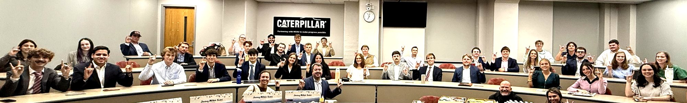

45 ABM students made sales pitches to agribusiness judges

The professional selling workshop, one of ABM’s High-Impact Experiences, teaches students how sales works in the modern ag industry. It’s now in its seventh year, and workshop leader Aaron Messer of Bayer Crop Science says it has gotten better every year. About 45 students took it this fall. On Oct. 26, each gave a final sales presentation to judges from Bayer Crop Science, Merck Animal Health, Alphin Crop Insurance, NuVue, and AgSouth Farm Credit. Madi Varron coordinates the workshop, and 16 students have already signed up to try out for the sales team.
Aimee Dearinger and freshman Molly Clemmer, a double major in ABM and Crop and Soil Sciences, both signed up for the same reason: they want careers in agricultural sales.
A first look at a career in ag sales
“I knew I would have the opportunity to try out for the NC State sales team, and that is a huge goal of mine,” Aimee said. “I also wanted to become more confident presenting and talking with potential customers.” Molly wanted the same head start: “Sales is a career that I am interested in, so I want to make sure that throughout college I participate in activities that will help with that.”
Sales starts with listening
“One of my biggest takeaways was how much listening goes into sales,” Aimee said. “You have to understand what matters to the customer before you can explain how your product could help them.” Aaron Messer had students practice those conversations, and the final pitch to a professional put it all together. “It pushed me outside my comfort zone and gave me experience I can build on.”
For Molly, the payoff was confidence and connections. “I haven’t had much professional experience, but now I feel way more confident in my professionalism,” she said. “I built so many connections and gained skills that I haven’t had experience with so far.”
Go for it, even if you’re nervous
Molly almost didn’t. “I was nervous going into it, but I thoroughly enjoyed it and decided to try out for the sales team.” Aimee’s advice to anyone on the fence: “Go for it, even if you don’t have sales experience. That’s the whole reason to participate and learn. Being able to communicate, ask good questions, and present your ideas is useful in almost any career.”
Take the workshop next fall
The professional selling workshop runs each fall. Interested in it or in trying out for the sales team? Contact Madi Varron.
‹ All issues